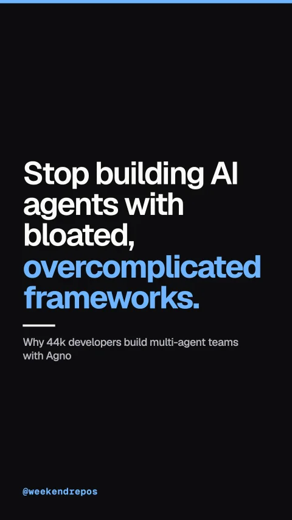

agno-agi/agno
Why 44k developers build multi-agent teams with Agno

Stop building AI agents with bloated, overcomplicated frameworks.
Legacy agent libraries force hundreds of fragile dependencies and complex graphs.
Traditional agent frameworks wrap simple LLM API calls in layers of complex abstractions, making debugging and production deployment agonizing.
Heavy agent bloat vs lightweight runtime
Agno creates autonomous multi-modal agents in just five lines of code.
With Agno, you define agents with native tool calling, persistent session memory, and multi-modal support using clean, readable Python classes.
Concise agent definition with native tools
Coordinate multi-agent teams with shared memory and structured outputs.
Coordinate teams of specialized agents where researchers, writers, and code executors collaborate with streaming terminal output and persistent storage.
Multi-agent team coordination
Agents natively process video, audio, text, and documents in real time.
Agno gives your agents native multi-modal understanding, processing video streams, audio files, and complex documents without separate pipeline adapters.
Native multi-modal agent architecture
Over forty-four thousand stars. Open source under the MIT license.
Formerly known as Phidata, Agno has grown to over forty-four thousand GitHub stars, completely open source under the MIT license.
agno-agi/agno · MIT license